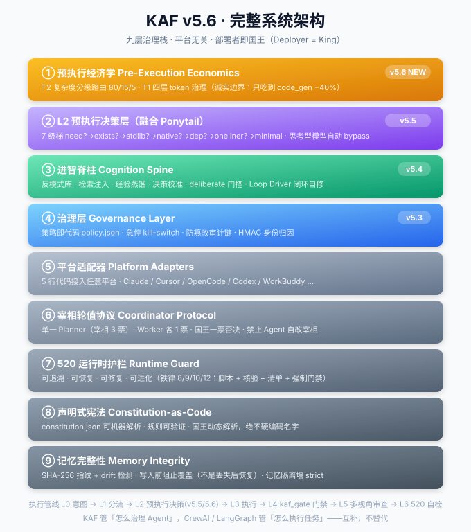
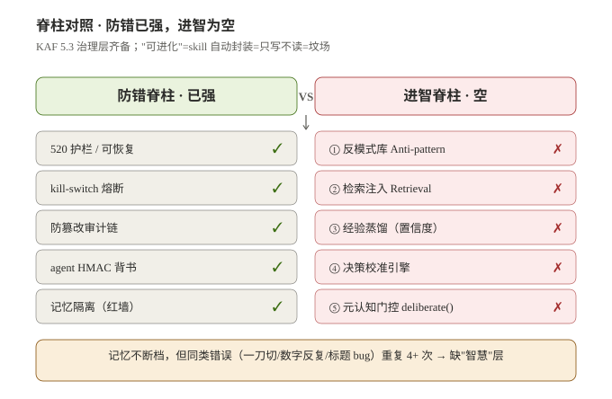
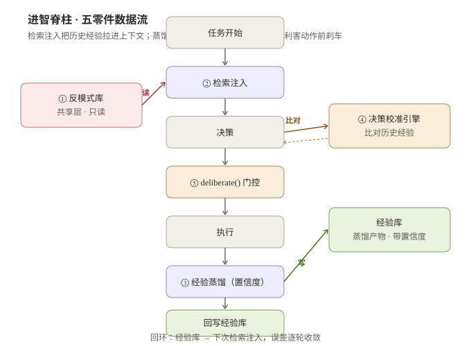
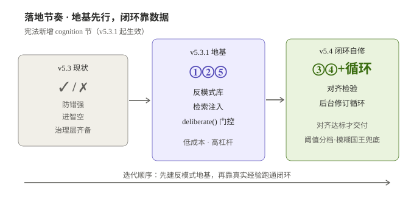
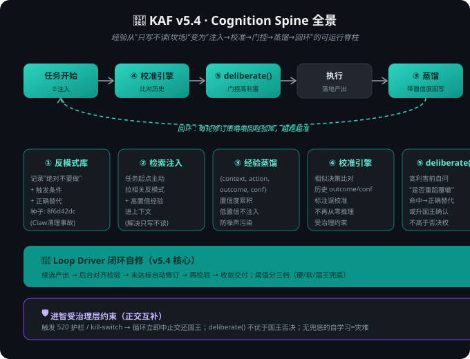
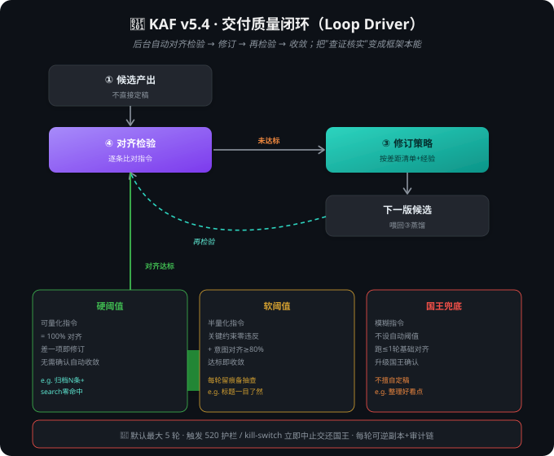
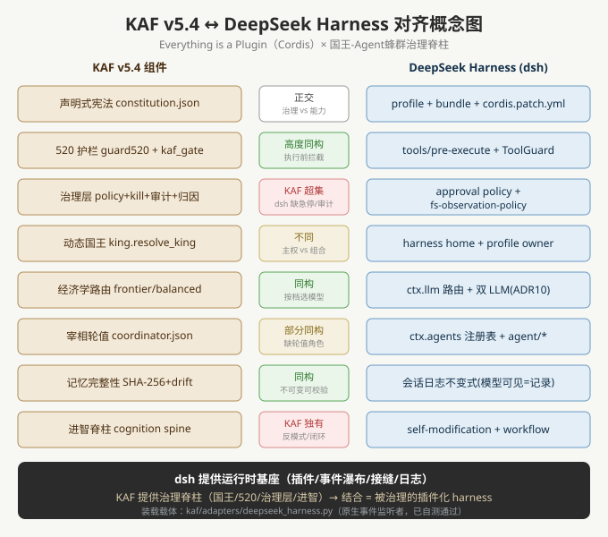

📑 目录（共 16 图，按阅读顺序）
- ★ ① v5.6 九层全栈架构（最新主图）
- ② 权力结构 Power Structure
- ③ 记忆隔离墙 Memory Isolation
- ④ 宰相轮值协议 PM Rotation
- ⑤ 治理评估流程 Governance.evaluate()
- ⑥ 防篡改审计链 Audit Chain
- ⑦ 共享状态拓扑 Shared State
- ⑧ 国王身份动态解析 Deployer = King
- ⑨ 进智脊柱 Cognition Spine
- ⑩ 蒸馏/校准/deliberate 数据流
- ⑪ 进智脊柱路线图
- ⑫ 进智全景（五零件+闭环）
- ⑬ 交付质量闭环 Loop Driver
- ⑭ DeepSeek 对齐 harness
- 🔬 交叉验证证据（v5.6 实地跑通）
- 📦 历史附录：v5.3 六层架构（已弃用，仅留对照）
★ ① v5.6 九层全栈架构（最新主图）

② 权力结构 Power Structure

③ 记忆隔离墙 Memory Isolation

④ 宰相轮值协议 PM Rotation

⑤ 治理评估流程 Governance.evaluate()
⑥ 防篡改审计链 Audit Chain
⑦ 共享状态拓扑 Shared State

⑧ 国王身份动态解析 Deployer = King

⑨ 进智脊柱 Cognition Spine（v5.4 引入）

⑩ 蒸馏/校准/deliberate 数据流

⑪ 进智脊柱路线图

⑫ 进智全景（五零件 + 闭环）

⑬ 交付质量闭环 Loop Driver

⑭ DeepSeek 对齐 harness

🔬 交叉验证证据（v5.6 实地跑通）
[1] 520 自检（在正确工作目录 D:\WorkBuddy\Claw）
================================================== KAF 520 自检 ================================================== ✅ traceable: 操作日志存在且有记录: 536 字节 (可追溯) ✅ recoverable: 存在备份: kaf-backup-2026-08-30 (可恢复) ✅ fixable: 失败回滚方案指向真实备份: kaf-backup-2026-08-30 (可修复) ✅ evolvable: skill目录: C:\Users\山禾/.workbuddy/skills (41个skill) ❌ enforced: 未真正强制: 缺 ['kaf_gate_audit.log 无运行记录(门禁从未被调用=装饰)'] 总体: FAIL（仅 1/5 红，且为已知缺口：强制门禁未接进实际操作）
[2] 三仓一致性审计（v5.6 净化版）
VERDICT ①vs②=OK ③vs②=OK 私货净化=OK ③缺口=0
AUDIT_EXIT=0
三仓 sha256 100% 一致 · GitHub 远端已含 ② 全部文件
[3] T2 复杂度分级路由（v5.6）
任务分类: complex
推荐: planner=opencode(frontier) / worker=claude(economy)
原因: 跨模块/高风险/需权衡设计 → 升档保质
v5.6 新增：80/15/5 分布（routine 80% / moderate 15% / complex 5%）
[4] T1 四层 token 治理（v5.6 诚实边界）
L1 code_read −66% ← serena (MCP·LSP 符号级检索) ❌ KAF 未集成
L2 command_output −65% ← rtk (输出裁剪) ❌ KAF 未集成
L3 prose_output −6% ← caveman (精简语体) ❌ KAF 未集成
L4 code_gen −40% ← Ponytail L2 决策梯 (v5.5 已集成) ✅ KAF 已集成
本任务命中层: L1 code_read ◀ 精筒代码救不了成本，须外接 serena
KAF 诚实口径：宣称"KAF 省 69.6% token"是假话；实际只吃到 code_gen 一层 −40%
[5] Ponytail 7 级梯（v5.5 L2 预执行决策）
need? → 需要
exists? → 已有同功能
stdlib? → N/A
native? → <input type="date"> ◀ 停梯（最大削减来源）
dep? → (跳过)
oneliner? → (跳过)
minimal? → (跳过)
决策: HOLD · 不写自组件，用原生 date input
安全红线: N/A
[6] 治理层自测（v5.3 沿用至 v5.6）
✅ 受保护资产(MEMORY.md)删除无 king_confirmed → DENY
✅ 受保护资产删除 + king_confirmed+user_confirmed+has_script → ALLOW
✅ kill-switch ON → 任何动作 DENY
✅ kill-switch OFF → 恢复 ALLOW
✅ 未归因 agent → DENY(attestation)
✅ attest 后 → 通过(非 attestation 拒绝)
✅ 审计链追加后 verify()=True
✅ 篡改审计链中行后 verify()=False（防篡改生效）
[self-test] PASS=8 FAIL=0
[7] 国王解析（v5.3 修正）
=== KAF v5.6 King Resolution ===
当前国王(King): ${KING_NAME}
解析来源(source): author_env(本地作者)
优先级: env:KAF_KING > kaf_config.json > 本地作者(${KING_NAME}) > 当前OS用户/operator
[8] 已知真缺口：强制门禁未通电（enforced 柱）
❌ enforced: kaf_gate_audit.log 无运行记录(门禁从未被调用=装饰) 说明：kaf_gate.py 已实现（删/移/覆盖前必过门禁），但 WorkBuddy 无原生 hook 接口 （hooks.json/PreToolUse 字段实测均无），agent 侧强制策略 adapters/workbuddy.py 已写实， 但实际执行流中从未被任何 operation 调用——属"框架写好了没通电"。 修复路径：把 kaf_gate.py check 接入每一次破坏性操作（agent 自觉调用并服从 BLOCK）。
📦 历史附录：v5.3 六层架构（已弃用，仅留对照）
v5.2 基础图解（权力结构 / 记忆隔离 / 宰相轮值）
权力结构 Power Structure
记忆隔离墙 Memory Isolation
宰相轮值流程 PM Rotation